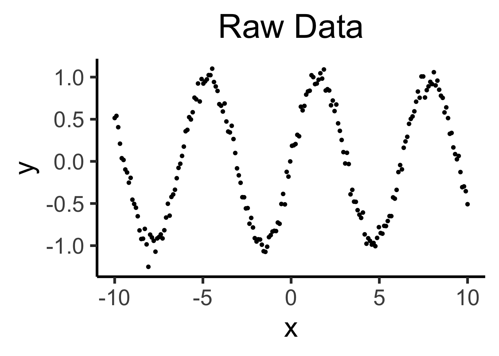
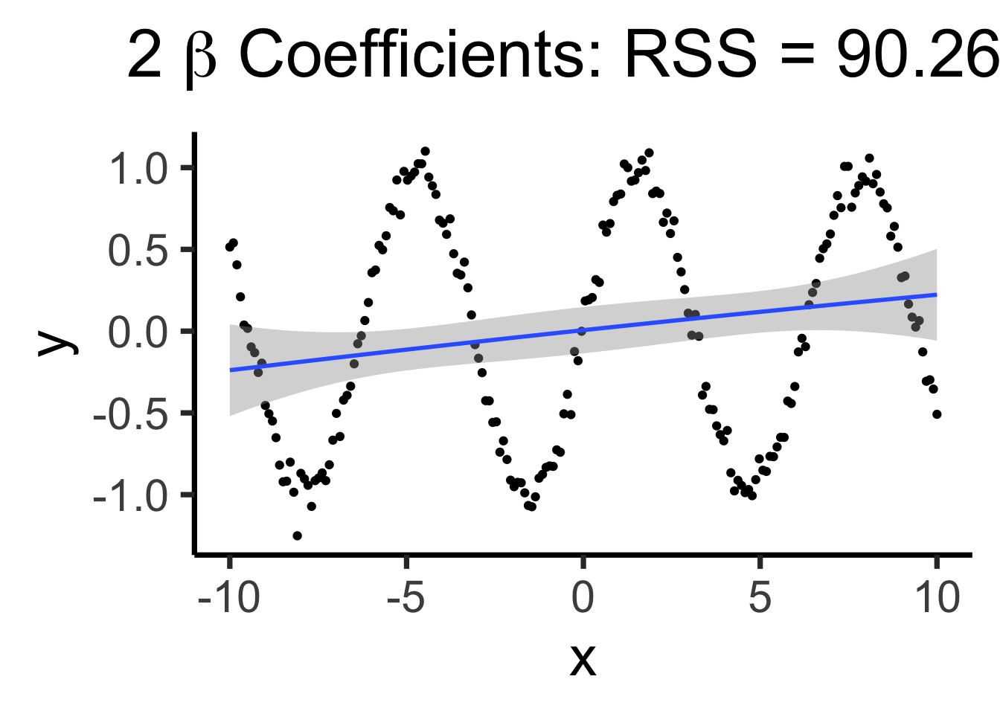
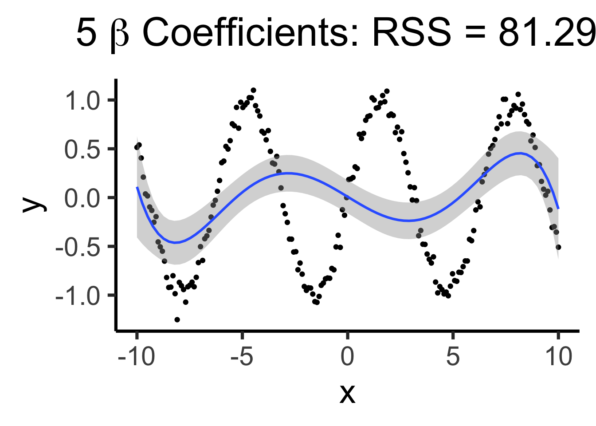
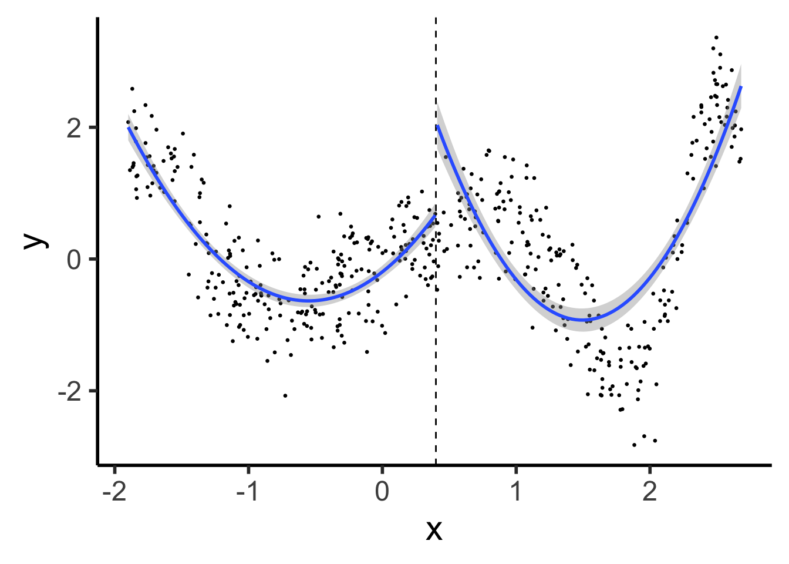
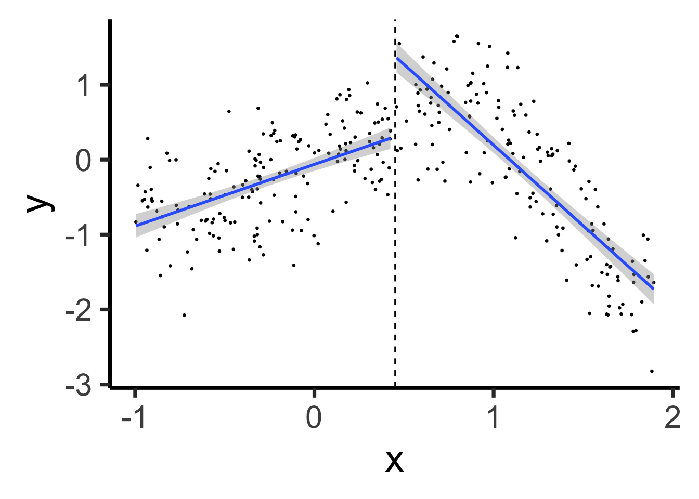
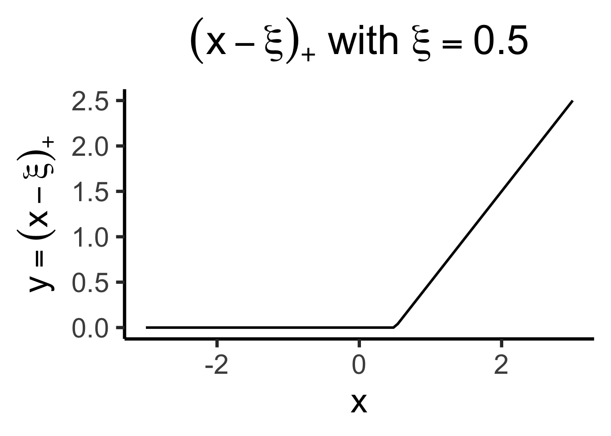
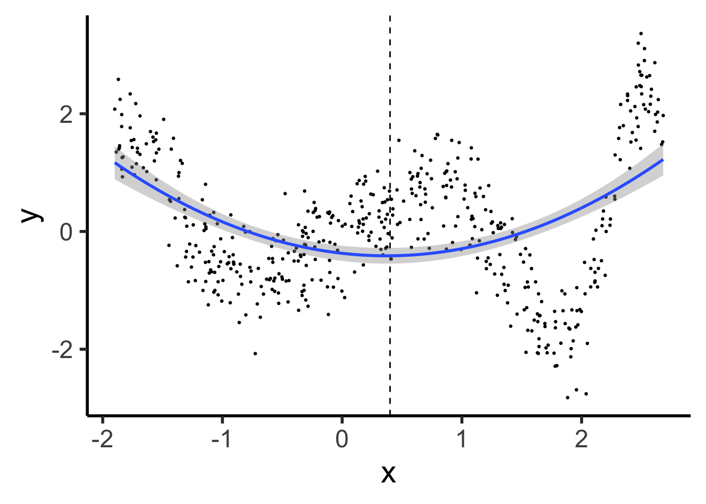
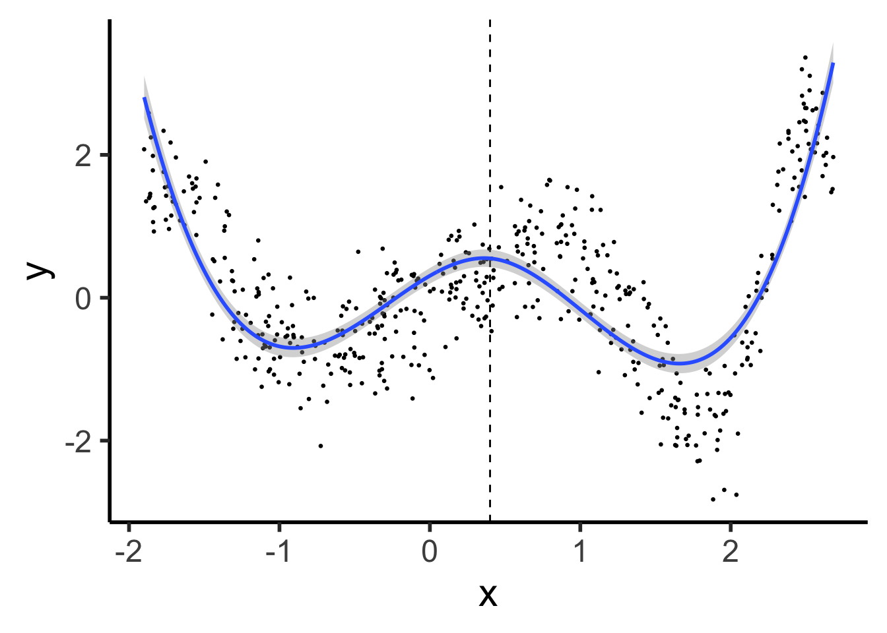

Code
source("../dsan-globals/_globals.r")
set.seed(5300)DSAN 5300: Statistical Learning
Spring 2025, Georgetown University
Today’s Planned Schedule:
| Start | End | Topic | |
|---|---|---|---|
| Lecture | 6:30pm | 7:00pm | Roadmap: Even More Wiggly “Linearity” → |
| 7:00pm | 7:20pm | “Manual” Model Selection: Subsets → | |
| 7:20pm | 7:40pm | Key Regularization Building Block: \(L^p\) Norm → | |
| 7:40pm | 8:00pm | Regularized Regression Intro → | |
| Break! | 8:00pm | 8:10pm | |
| 8:10pm | 8:50pm | Basically Lasso is the Coolest Thing Ever → | |
| 8:50pm | 9:00pm | Scary-Looking But Actually-Fun W07 Preview → |
source("../dsan-globals/_globals.r")
set.seed(5300)\[ \DeclareMathOperator*{\argmax}{argmax} \DeclareMathOperator*{\argmin}{argmin} \newcommand{\bigexp}[1]{\exp\mkern-4mu\left[ #1 \right]} \newcommand{\bigexpect}[1]{\mathbb{E}\mkern-4mu \left[ #1 \right]} \newcommand{\definedas}{\overset{\small\text{def}}{=}} \newcommand{\definedalign}{\overset{\phantom{\text{defn}}}{=}} \newcommand{\eqeventual}{\overset{\text{eventually}}{=}} \newcommand{\Err}{\text{Err}} \newcommand{\expect}[1]{\mathbb{E}[#1]} \newcommand{\expectsq}[1]{\mathbb{E}^2[#1]} \newcommand{\fw}[1]{\texttt{#1}} \newcommand{\given}{\mid} \newcommand{\green}[1]{\color{green}{#1}} \newcommand{\heads}{\outcome{heads}} \newcommand{\iid}{\overset{\text{\small{iid}}}{\sim}} \newcommand{\lik}{\mathcal{L}} \newcommand{\loglik}{\ell} \DeclareMathOperator*{\maximize}{maximize} \DeclareMathOperator*{\minimize}{minimize} \newcommand{\mle}{\textsf{ML}} \newcommand{\nimplies}{\;\not\!\!\!\!\implies} \newcommand{\orange}[1]{\color{orange}{#1}} \newcommand{\outcome}[1]{\textsf{#1}} \newcommand{\param}[1]{{\color{purple} #1}} \newcommand{\pgsamplespace}{\{\green{1},\green{2},\green{3},\purp{4},\purp{5},\purp{6}\}} \newcommand{\prob}[1]{P\left( #1 \right)} \newcommand{\purp}[1]{\color{purple}{#1}} \newcommand{\sign}{\text{Sign}} \newcommand{\spacecap}{\; \cap \;} \newcommand{\spacewedge}{\; \wedge \;} \newcommand{\tails}{\outcome{tails}} \newcommand{\Var}[1]{\text{Var}[#1]} \newcommand{\bigVar}[1]{\text{Var}\mkern-4mu \left[ #1 \right]} \]
[Weeks 4-6]
Polynomial Regression
Linear Models
Piecewise Regression
Linear Models
[Today]
Splines (Truncated Power Bases)
Linear Models
Natural Splines
Linear Models
Raw data: \(y = \sin(x) + \varepsilon\)
library(tidyverse) |> suppressPackageStartupMessages()
library(latex2exp) |> suppressPackageStartupMessages()
N <- 200
x_vals <- seq(from=-10, to=10, length.out=N)
y_raw <- sin(x_vals)
y_noise <- rnorm(length(y_raw), mean=0, sd=0.075)
y_vals <- y_raw + y_noise
dgp_label <- TeX("Raw Data")
data_df <- tibble(x=x_vals, y=y_vals)
base_plot <- data_df |> ggplot(aes(x=x, y=y)) +
geom_point() +
theme_dsan(base_size=28)
base_plot + labs(title=dgp_label)
Bad (quadratic) model
quad_model <- lm(y ~ poly(x,2), data=data_df)
quad_rss <- round(get_rss(quad_model), 3)
poly_label_2 <- TeX(paste0("2 $\\beta$ Coefficients: RSS = ",quad_rss))
base_plot +
geom_smooth(method='lm', formula=y ~ poly(x,2)) +
labs(title=poly_label_2)
Making it “better” with more complex polynomials
poly5_model <- lm(y ~ poly(x,5), data=data_df)
poly5_rss <- round(get_rss(poly5_model), 3)
poly5_label <- TeX(paste0("5 $\\beta$ Coefficients: RSS = ",poly5_rss))
base_plot +
geom_smooth(method='lm', formula=y ~ poly(x,5)) +
labs(title=poly5_label)
poly8_model <- lm(y ~ poly(x,8), data=data_df)
poly8_rss <- round(get_rss(poly8_model), 3)
poly8_label <- TeX(paste0("8 $\\beta$ Coefficients: RSS = ",poly8_rss))
base_plot +
geom_smooth(method='lm', formula=y ~ poly(x,8)) +
labs(title=poly8_label)
Using all data to estimate single parameter, by using the “correct” basis function!
\[ Y = \beta_0 + \beta_1 \sin(x) \]
sine_model <- lm(y ~ sin(x), data=data_df)
sine_rss <- round(get_rss(sine_model), 3)
sine_label <- TeX(paste0("Single sin(x) Coefficient: RSS = ",sine_rss))
base_plot +
geom_smooth(method='lm', formula=y ~ sin(x)) +
labs(title=sine_label)
lm() 🤔(Decomposing Fancy Regressions into Core “Pieces”)
Q: What do all these types of regression have in common?
A: They can all be written in the form
\[ Y = \beta_0 + \beta_1 b_1(X) + \beta_2 b_2(X) + \cdots + \beta_d b_d(X) \]
Where \(b(\cdot)\) is called a basis function
| What we want | How we do it | Name for result | |
|---|---|---|---|
| Model sub-regions of \(\text{domain}(X)\) | Chop \(\text{domain}(X)\) into pieces, one regression per piece | Discontinuous Segmented Regression | |
| Continuous prediction function | Require pieces to join at chop points \(\{\xi_1, \ldots, \xi_K\}\) | Continuous Segmented Regression | |
| Smooth prediction function | Require pieces to join and have equal derivatives at \(\xi_i\) | Spline | |
| Less jump in variance at boundaries | Reduce complexity of polynomials at endpoints | Natural Spline |
library(tidyverse) |> suppressPackageStartupMessages()
set.seed(5300)
compute_y <- function(x) {
return(x * cos(x^2))
}
N <- 500
xmin <- -1.9
xmax <- 2.7
x_vals <- runif(N, min=xmin, max=xmax)
y_raw = compute_y(x_vals)
y_noise = rnorm(N, mean=0, sd=0.5)
y_vals <- y_raw + y_noise
prod_df <- tibble(x=x_vals, y=y_vals)
knot <- (xmin + xmax) / 2
prod_df <- prod_df |> mutate(segment = x <= knot)
# First segment model
#left_df <- prod_df |> filter(x <= knot_point)
#left_model <- lm(y ~ poly(x, 2), data=left_df)
prod_df |> ggplot(aes(x=x, y=y, group=segment)) +
geom_point(size=0.5) +
geom_vline(xintercept=knot, linetype="dashed") +
geom_smooth(method='lm', formula=y ~ poly(x, 2), se=TRUE) +
theme_classic(base_size=22)
\[ \hspace{6.5cm} Y^{\phantom{🧐}}_L = \beta_0 + \beta_1 X_L \]
\[ Y_R = \beta_0^{🧐} + \beta_1 X_R \hspace{5cm} \]
set.seed(5300)
xmin_sub <- -1
xmax_sub <- 1.9
sub_df <- prod_df |> filter(x >= xmin_sub & x <= xmax_sub)
sub_knot <- (xmin_sub + xmax_sub) / 2
sub_df <- sub_df |> mutate(segment = x <= sub_knot)
# First segment model
sub_df |> ggplot(aes(x=x, y=y, group=segment)) +
geom_point(size=0.5) +
geom_vline(xintercept=sub_knot, linetype="dashed") +
geom_smooth(method='lm', formula=y ~ x, se=TRUE, linewidth=g_linewidth) +
theme_classic(base_size=28)
\[ Y = \beta_0 + \beta_1 (X \text{ before } \xi) + \beta_2 (X \text{ after } \xi) \]
\[ \text{ReLU}(x) \definedas (x)_+ \definedas \begin{cases} 0 &\text{if }x \leq 0 \\ x &\text{if }x > 0 \end{cases} \implies (x - \xi)_+ = \begin{cases} 0 &\text{if }x \leq \xi \\ x - \xi &\text{if }x > 0 \end{cases} \]
library(latex2exp) |> suppressPackageStartupMessages()
trunc_x <- function(x, xi) {
return(ifelse(x <= xi, 0, x - xi))
}
trunc_x_05 <- function(x) trunc_x(x, 1/2)
trunc_title <- TeX("$(x - \\xi)_+$ with $\\xi = 0.5$")
trunc_label <- TeX("$y = (x - \\xi)_+$")
ggplot() +
stat_function(
data=data.frame(x=c(-3,3)),
fun=trunc_x_05,
linewidth=g_linewidth
) +
xlim(-3, 3) +
theme_dsan(base_size=28) +
labs(
title = trunc_title,
x = "x",
y = trunc_label
)
Our new (non-naïve) model:
\[ \begin{align*} Y &= \beta_0 + \beta_1 X + \beta_2 (X - \xi)_+ \\ &= \beta_0 + \begin{cases} \beta_1 X &\text{if }X \leq \xi \\ (\beta_1 + \beta_2)X &\text{if }X > \xi \end{cases} \end{align*} \]
sub_df <- sub_df |> mutate(x_tr = ifelse(x < sub_knot, 0, x - sub_knot))
linseg_model <- lm(y ~ x + x_tr, data=sub_df)
broom::tidy(linseg_model) |> mutate_if(is.numeric, round, 3) |> select(-p.value)| term | estimate | std.error | statistic |
|---|---|---|---|
| (Intercept) | 0.187 | 0.044 | 4.255 |
| x | 1.340 | 0.093 | 14.342 |
| x_tr | -2.868 | 0.168 | -17.095 |
sub_df |> ggplot(aes(x=x, y=y)) +
geom_point(size=0.5) +
geom_vline(xintercept=sub_knot, linetype="dashed") +
geom_smooth(method='lm', formula=y ~ x + ifelse(x > sub_knot, x-sub_knot, 0), se=TRUE, linewidth=g_linewidth) +
theme_classic(base_size=28)
\[ \begin{align*} Y &= \beta_0 + \beta_1 X + \beta_2 X^2 + \beta_3 (X - \xi)_+ + \beta_4 (X - \xi)_+^2 \\[0.8em] &= \beta_0 + \begin{cases} \beta_1 X + \beta_2 X^2 &\text{if }X \leq \xi \\ (\beta_1 + \beta_3) X + (\beta_2 + \beta_4) X^2 &\text{if }X > \xi \end{cases} \end{align*} \]
prod_df <- prod_df |> mutate(x_tr = ifelse(x > knot, x - knot, 0))
seg_model <- lm(
y ~ poly(x, 2) + poly(x_tr, 2),
data=prod_df
)seg_model |> broom::tidy() |> mutate_if(is.numeric, round, 3) |> select(-p.value)| term | estimate | std.error | statistic |
|---|---|---|---|
| (Intercept) | 0.104 | 0.035 | 2.961 |
| poly(x, 2)1 | 112.929 | 6.824 | 16.548 |
| poly(x, 2)2 | 64.558 | 3.692 | 17.484 |
| poly(x_tr, 2)1 | -125.195 | 7.690 | -16.281 |
| poly(x_tr, 2)2 | 1.526 | 1.036 | 1.473 |
cont_seg_plot <- ggplot() +
geom_point(data=prod_df, aes(x=x, y=y), size=0.5) +
geom_vline(xintercept=knot, linetype="dashed") +
stat_smooth(
data=prod_df, aes(x=x, y=y),
method='lm',
formula=y ~ poly(x,2) + poly(ifelse(x > knot, (x - knot), 0), 2),
n = 300
) +
#geom_smooth(data=prod_df |> filter(segment == FALSE), aes(x=x, y=y), method='lm', formula=y ~ poly(x,2)) +
# geom_smooth(method=segreg, formula=y ~ seg(x, npsi=1, fixed.psi=0.5)) + # + seg(I(x^2), npsi=1)) +
theme_classic(base_size=22)
cont_seg_plot
\[ \frac{\partial Y}{\partial X} = \beta_1 + 2\beta_2 X + \beta_3 + 2\beta_4 X \]
Continuous Segmented:
cont_seg_plot
“Quadratic Spline”:
ggplot() +
geom_point(data=prod_df, aes(x=x, y=y), size=0.5) +
geom_vline(xintercept=knot, linetype="dashed") +
stat_smooth(
data=prod_df, aes(x=x, y=y),
method='lm',
formula=y ~ poly(x,2) + ifelse(x > knot, (x - knot)^2, 0),
n = 300
) +
theme_dsan(base_size=22)
\[ Y = \beta_0 + \beta_1 X + \beta_2 X^2 \]
ggplot() +
geom_point(data=prod_df, aes(x=x, y=y), size=0.5) +
geom_vline(xintercept=knot, linetype="dashed") +
stat_smooth(
data=prod_df, aes(x=x, y=y),
method='lm',
formula=y ~ poly(x,2),
n = 300
) +
theme_dsan(base_size=22)
(We did it, we finally did it)
ggplot() +
geom_point(data=prod_df, aes(x=x, y=y), size=0.5) +
geom_vline(xintercept=knot, linetype="dashed") +
stat_smooth(
data=prod_df, aes(x=x, y=y),
method='lm',
formula=y ~ poly(x,3) + ifelse(x > knot, (x - knot)^3, 0),
n = 300
) +
theme_dsan(base_size=22)
Polynomials start to BEHAVE BADLY as they go to \(-\infty\) and \(\infty\)
library(splines) |> suppressPackageStartupMessages()
set.seed(5300)
N_sparse <- 400
x_vals <- runif(N_sparse, min=xmin, max=xmax)
y_raw = compute_y(x_vals)
y_noise = rnorm(N_sparse, mean=0, sd=1.0)
y_vals <- y_raw + y_noise
sparse_df <- tibble(x=x_vals, y=y_vals)
knot_sparse <- (xmin + xmax) / 2
knot_vec <- c(-1.8,-1.7,-1.6,-1.5,-1.4,-1.2,-1.0,-0.8,-0.6,-0.4,-0.2,0,knot_sparse,1,1.5,2)
knot_df <- tibble(knot=knot_vec)
# Boundary lines
left_bound_line <- geom_vline(
xintercept = xmin + 0.1, linewidth=1,
color="red", alpha=0.8
)
right_bound_line <- geom_vline(
xintercept = xmax - 0.1,
linewidth=1, color="red", alpha=0.8
)
ggplot() +
geom_point(data=sparse_df, aes(x=x, y=y), size=0.5) +
geom_vline(
data=knot_df, aes(xintercept=knot),
linetype="dashed"
) +
stat_smooth(
data=sparse_df, aes(x=x, y=y),
method='lm',
formula=y ~ bs(x, knots=c(knot_sparse), degree=25),
n=300
) +
left_bound_line +
right_bound_line +
theme_dsan(base_size=22)
Natural Splines: Force leftmost and rightmost pieces to be linear
library(splines) |> suppressPackageStartupMessages()
set.seed(5300)
N_sparse <- 400
x_vals <- runif(N_sparse, min=xmin, max=xmax)
y_raw = compute_y(x_vals)
y_noise = rnorm(N_sparse, mean=0, sd=1.0)
y_vals <- y_raw + y_noise
sparse_df <- tibble(x=x_vals, y=y_vals)
knot_sparse <- (xmin + xmax) / 2
ggplot() +
geom_point(data=sparse_df, aes(x=x, y=y), size=0.5) +
stat_smooth(
data=sparse_df, aes(x=x, y=y),
method='lm',
formula=y ~ ns(x, knots=knot_vec, Boundary.knots=c(xmin + 0.1, xmax - 0.1)),
n=300
) +
geom_vline(
data=knot_df, aes(xintercept=knot),
linetype="dashed"
) +
left_bound_line +
right_bound_line +
theme_dsan(base_size=22)
(Where “cooler” here really means “more statistically-principled”)
Week 4 (General Form):
\[ \boldsymbol\theta^* = \underset{\boldsymbol\theta}{\operatorname{argmin}} \left[ \mathcal{L}(y, \widehat{y}; \boldsymbol\theta) + \lambda \cdot \mathsf{Complexity}(\boldsymbol\theta) \right] \]

Last Week (Penalizing Polynomials):
\[ \boldsymbol\beta^*_{\text{lasso}} = \underset{\boldsymbol\beta, \lambda}{\operatorname{argmin}} \left[ \frac{1}{N}\sum_{i=1}^{N}(\widehat{y}_i(\boldsymbol\beta) - y_i)^2 + \lambda \|\boldsymbol\beta\|_1 \right] \]

Now (Penalizing Sharp Change / Wigglyness):
\[ g^* = \underset{g, \lambda}{\operatorname{argmin}} \left[ \sum_{i=1}^{N}(g(x_i) - y_i)^2 + \lambda \overbrace{\int}^{\mathclap{\text{Sum of}}} [\underbrace{g''(t)}_{\mathclap{\text{Change in }g'(t)}}]^2 \mathrm{d}t \right] \]

Restricting the first derivative would optimize for a function that doesn’t change much at all. Restricting the second derivative just constrains sharpness of the changes.
Think of an Uber driver: penalizing speed would just make them go slowly (ensuring slow ride). Penalizing acceleration ensures that they can travel whatever speed they want, as long as they smoothly accelerate and decelerate between those speeds (ensuring non-bumpy ride!).
\[ g^* = \underset{g, \lambda}{\operatorname{argmin}} \left[ \sum_{i=1}^{N}(g(x_i) - y_i)^2 + \lambda \overbrace{\int}^{\mathclap{\text{Sum of}}} [\underbrace{g''(t)}_{\mathclap{\text{Change in }g'(t)}}]^2 \mathrm{d}t \right] \]
As \(\lambda \rightarrow 0\), \(g^*\) will grow as wiggly as necessary to achieve zero RSS / MSE / \(R^2\)
As \(\lambda \rightarrow \infty\), \(g^*\) converges to OLS linear regression line
We didn’t optimize over splines, yet optimal \(g\) is a spline!
Specifically, a Natural Cubic Spline with…